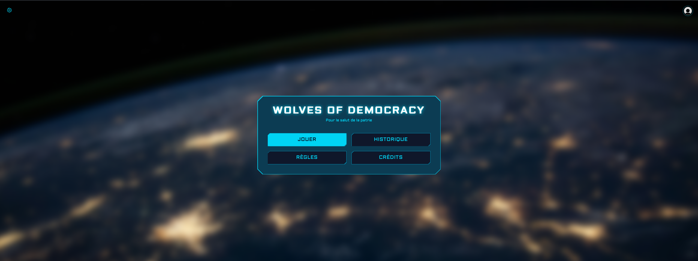

SAE 2A – Wolves of Democracy
Adaptation numérique du jeu Les Loups‑Garous de Thiercelieux
Wolves of Democracy est un jeu de société en ligne multi‑plateformes, composé d’une application web de jeu, d’un espace d’administration web et d’une application mobile. Le projet reprend les mécaniques Loups‑Garous (villageois vs loups, alternance jour/nuit, discussions) et a été mené par une équipe de 5 FI + 1 FA, encadrée par M. Restituito et Mme Pouclet.
Contexte & règles
Une partie réunit entre 6 et 15 joueurs avec deux rôles principaux : villageois et loup‑garou. Le nombre de loups varie selon le nombre de participants (1 à 3 loups). Les villageois doivent éliminer tous les loups, tandis que les loups doivent éliminer tous les villageois.
Les trois demandes clés du client étaient : distinguer gentils/méchants, implémenter le cycle jour/nuit, et permettre aux joueurs de parler.
Architecture globale
L’architecture repose sur trois clients : application web de jeu, application web d’administration et application mobile. Côté serveur, on retrouve un serveur de jeu temps réel, une API REST centrale, une base de données principale et Redis pour le cache. Les échanges utilisent HTTPS et WebSockets, avec une orchestration autour de l’API centrale qui relie l’ensemble des briques.
Détail par composant
Application web (jeu)
Technos : PHP, HTML5, Tailwind CSS.
Cette interface couvre l’accueil, la liste des lobbies, l’authentification, le profil utilisateur et la gestion des parties. Elle sert de point d’entrée principal pour l’expérience de jeu.

Application mobile
Technos : Android, Kotlin.
L’objectif est de rejoindre rapidement une partie depuis smartphone, participer au jeu en mobilité et conserver l’ambiance du jeu de société à distance.
Application d’administration
Technos : Blazor, C#.
Elle permet de superviser les parties, suivre les joueurs et ajuster différents paramètres de configuration pour faciliter le pilotage global de la plateforme.
Serveur de jeu
Technos : TypeScript, Node.js, Redis.
Le serveur gère la logique temps réel, l’attribution des rôles, les tours jour/nuit et la synchronisation entre clients. Redis est utilisé pour le cache et la fluidité des échanges.
API REST
Technos : PHP, Docker, MySQL/MariaDB.
L’API est le point central pour les clients. V1 a posé la base, V2 a apporté la conteneurisation Docker, du refactor et une couche d’authentification plus robuste.
Base de données
Technos : MySQL / MariaDB.
Elle stocke les comptes, parties, résultats et journaux techniques, afin d’assurer la persistance, la traçabilité et l’analyse des sessions de jeu.
Tests & qualité
Outils : PHPUnit, JUnit 5, Mocha, SonarQube.
Des tests unitaires et d’intégration ont été mis en place sur plusieurs composants (serveur, API, etc.), avec des indicateurs de qualité maîtrisés : peu de bugs/vulnérabilités, duplication faible, couverture de tests satisfaisante.
Organisation & gestion de projet
Le suivi s’est appuyé sur Gantt, WBS, user stories, Kanban (Miro), GitLab, Discord, Google Docs et Google Sheets. La répartition du travail et le suivi des heures prévues/réelles ont permis d’aligner l’équipe et de garder une communication fluide.
Difficultés rencontrées
Les principales difficultés ont concerné la découverte de nouvelles technologies, la coordination d’une équipe élargie et la synchronisation des briques web, mobile, serveur, API et base de données.
Ce que le projet nous a apporté
Le projet a renforcé nos compétences techniques (PHP, Node.js/ TypeScript, Tailwind, Redis, REST API, Kotlin, Android, MySQL/MariaDB, Docker, principes SOLID) et nos compétences humaines : communication, organisation, collaboration et vision globale multi‑couches.
Conclusion
Wolves of Democracy nous a permis de construire une plateforme de jeu cohérente, de prendre en main un large éventail de technologies, et de développer une vision concrète du travail de groupe sur un projet complet.